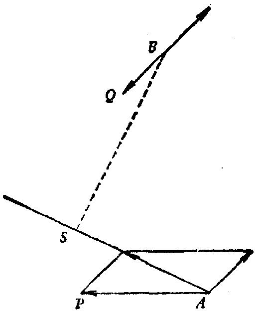

向前移动的情况去呢?停止不动是运动的特例。而且运动是相对的——所以，不
论B的给定速度是多少，我都可把B看作是停止不动的!下面更清楚地表达了这个
念头：如果我们使由两只船所组成的整个系统具有同一个均匀速度。则两船的
相对位置不变，相对距离保持不变，特别是问题所求的两船最短相对距离也保
持不变。现在，我可以加上一个运动，把其中一个船的速度减为 O ，这样就把问
题的普遍情况简化为刚才解决的特殊情况。让我在 BQ 与 AB 上加上一个与 BQ 方向
相反，大小相等的速度。这是个辅助元素，它使我们有可能利用特殊结果。
作出最短距离 BS ，见图20。
图20
(5)上述【第(3)，(4)点】解答用了一个值得我们分析与记住的逻辑模式。
为了解决我们原来的问题【(3)中前几行】，我们先解决另一个问题，该
问题我们恰当地称之为辅助问题【(3)中最后几行】。此辅助问题是原问题的一
个特例(即极端情况，两船之一停止不动)。原问题是提出来的，而辅助问题是
在求解过程中创造出来的。原问题看起来困难，而辅助问题的求解比较直接了
当。作为特例的辅助问题实际上比原问题的期望更小。那么，在辅助问题的基
础上居然能解决原问题，这是为什么呢?这是因为在把原问题化简成辅助问题
时，我们增加了一个重要的补充说明(关于运动的相对性)。
我们成功地解决了我们的原问题归功于两点。第一，我们想出了一个有利
的辅助问题。第二，我们发现了一个从辅助问题过渡到原问题的补充说明。我
们用两步解决了原问题，就象小河当中正好有块合适的石头可作临时的踏脚石，
我们用两步过河一样。
总之，在解决更困难的、期望大的、具普遍性的原问题时，我们利用了不
太困难的、期望小的、特殊的辅助问题作为踏脚石。
(6)特殊化还有许多其他用途，这里无法一一讨论了。我们仅仅提一下，
它在检验解答方面也是有用的【见“你能检验这结果吗?”第(2)点】。
一种多少有点原始的特殊化类型对教师常常很有用。这就是将问题中的抽
象数学元素给以某些具体解释。例如，问题中有个长方体，教师可取教室为例(见